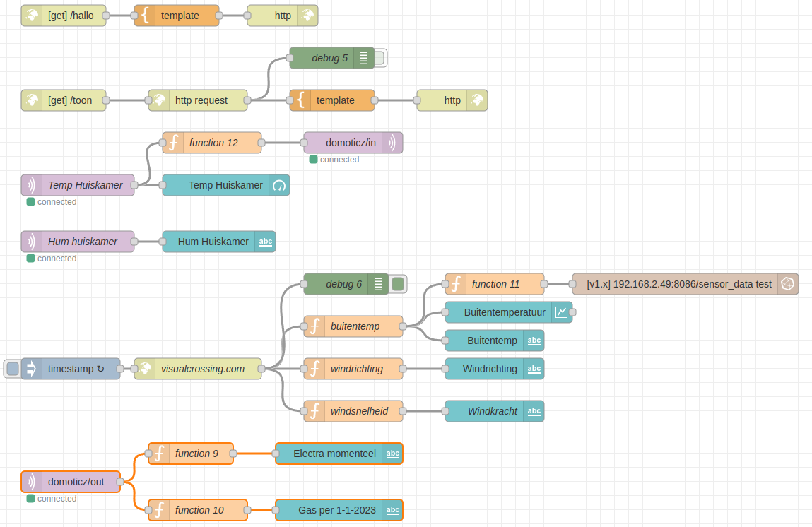

Bijlage
Zorg ervoor dat je toestemming hebt van een ouder of verantwoordelijke volwassene voordat je iets downloadt op je computer. Als je hulp nodig hebt tijdens het downloaden en installeren, vraag dan aan een ouder of verantwoordelijke volwassene om je te helpen.
Introduction
Ik heb zelf een Lenovo Legion Y520 Windows 10 laptop met Ubuntu 22.04 geïnstalleerd op een Samsung portable SSD T5 schijf. Ik start mijn machine op vanaf deze schijf.
Node-RED flows van de cursus importeren
Zorg dat je vooraf de modules Dashboard en InfluxDB hebt geinstalleerd.
Volg de volgende stappen om de Node-RED flows te importeren.
| Stap | Actie | Opmerking |
|---|---|---|
| 1 | Klik op de link: flows_cursus.json | Open het bestand. |
| 2 | Ctrl + A | Selecteer alle tekst. |
| 3 | Ctrl + C | Kopieer de tekst naar het klembord. |
| 4 | Ctrl + I | Open het import venster. |
| 5 | Ctrl + V | Plak de code in het import ventser. |
| 6 | Druk op de toets "Import" | Code wordt geïmporteerd. |

Voordelen en nadelen van containerisatie
Nadelen
Er zijn een aantal nadelen verbonden aan containerisatie, waaronder:
Complexiteit: Containerisatie kan de complexiteit van een systeem verhogen, vooral als er veel verschillende containers worden gebruikt.
Beveiliging: Containerisatie kan beveiligingsrisico's introduceren, vooral als containers niet goed worden beheerd en geconfigureerd.
Prestaties: In sommige gevallen kunnen containers de prestaties van een systeem beïnvloeden, vooral als er veel containers op dezelfde fysieke server worden uitgevoerd.
Opslag: Containerisatie kan leiden tot een grotere opslagbehoefte voor het opslaan van de containerafbeeldingen.
Beheer: Containerbeheer kan complex zijn en vereist specifieke vaardigheden en tools.
Netwerk: In sommige gevallen kan de netwerkconfiguratie van de containerisatie-omgeving complex zijn.
Voordelen
Er zijn een aantal voordelen verbonden aan containerisatie, waaronder:
Portabiliteit: Containers zorgen voor een hoge graad van portabiliteit, waardoor applicaties gemakkelijk tussen verschillende omgevingen kunnen worden verplaatst.
Isolatie: Containers bieden een aantal voordelen voor de isolatie van applicaties, waardoor het risico van conflicten tussen verschillende applicaties wordt verminderd.
Schaalbaarheid: Containerisatie maakt het gemakkelijker om applicaties te schalen, aangezien containers gemakkelijk kunnen worden toegevoegd of verwijderd als er meer of minder capaciteit nodig is.
Kostenefficiëntie: Containerisatie kan leiden tot kostenefficiëntie, aangezien containers minder middelen verbruiken dan traditionele virtuele machines.
Continu integratie en deployment: De containerisatie-technologie kan gebruikt worden voor continu integratie en deployment, waardoor het gemakkelijker is om updates en nieuwe versies van applicaties te implementeren.
Beheer: Containerisatie kan het beheer van applicaties vergemakkelijken, omdat containers gemakkelijk kunnen worden gestart, gestopt en verwijderd.
Installeren van PuTTY op Windows
Om PuTTY te downloaden en te installeren, moet je de volgende stappen volgen:
| Stap | Actie | Opmerking |
|---|---|---|
| 1 | Ga naar https://www.putty.org/ | Website van PuTTY. |
| 2 | Klik op de link 'Download PuTTY' om het installatieprogramma te downloaden | |
| 3 | Zoek het installatieprogramma in je downloads en open het | |
| 4 | Volg de stappen in het installatieprogramma om PuTTY te installeren op je computer | |
Installeren Git
Git is een vrij en open source gedistribueerd versiebeheersysteem, ontworpen om alles van kleine tot zeer grote projecten met snelheid en efficiëntie af te handelen.
Voorwaarden
- Je computer OS is Ubuntu 22.04 64 bit.
- Je hebt een GitHub account.
| Stap | Actie | Opmerking |
|---|---|---|
| 1 | sudo apt install git | |
| 2 | git config –global user.email "<Je email address>" | Bijvoorbeeld: "rbontekoe@appligate.nl" |
| 3 | git config –global user.name "<Je voor- en achternaam>" | Bijvoorbeeld: "Rob Bontekoe" |
| 4 | git config –global github.user "<Je git hub naam>" | Bijvoorbeeld: "rbontekoe" |
| 5 | cat .gitconfig | Dit laat je git gegevens zien. Bestanden die met een punt beginnen zijn verborgen bestanden. Verborgen bestanden kun je zien met ls -al. |
Installeren Thonny
Om Thonny te installeren op Ubuntu 22.04, volg je de volgende stappen:
| Stap | Actie | Opmerking |
|---|---|---|
| 1 | Ctrl + Alt + T | Open het terminalvenster. |
| 2 | sudo apt install thonny | Thonny installeren. |
Installeren Docker op Raspberry Pi
Docker is een open containerplatform voor het ontwikkelen, verschepen en uitvoeren van toepassingen.
Voorwaarden
- Je computer besturingssysteem is Ubuntu 22.04 of hoger.
- Je hebt
curlgeinstallleerd:sudo apt install curl.
Installeren
| Stap | Actie | Opmerking |
|---|---|---|
| 1 | sudo apt update | Update Software Repositories. |
| 2 | sudo apt remove docker docker-engine docker.io | Verwijder oudere versies van Docker |
| 3 | curl -sSL https://get.docker.com | sh | Installeer Docker |
| 4 | sudo docker version | Check Docker Engine Version |
Installeren van Ubuntu op een Samsung T5 en Lenovo Legion Y520 met Windows 10
The stappen die ik heb gevolgd.
| Stap | Actie/Response | Opmerking |
|---|---|---|
| 1 | Download ISO-image van de Ubuntu 18.04. website | |
| 2 | Kopieer met Rufus naar een USB-stick | |
| 3 | Start de machine en druk op F2 | Verander de Bios van Lenovo |
Onder de Boot tab:
Fast Boot disabled
Onder de Security tab:
Secureboot disabled| Stap | Action/Response | Omerking |
|---|---|---|
| 4 | Start Y520 met Windows 10 and druk op F12 | |
| 5 | Kies Ubuntu | Herstart via USB. |
| 6 | Na herstart kies voor install Ubuntu on 500GB portable disk | |
| 7 | sudo apt update | |
| 8 | sudo do-release-upgrade -d | Upgrade naar Ubuntu 20.04. |
Nog even bewaren!
########################
Deze code gaat over twee services die "Grafana" en "InfluxDB" heten.
Laten we beginnen met Grafana. De "services" sectie vertelt ons dat we een service hebben die Grafana heet. Het gebruikt een "image" genaamd "grafana/grafana", wat betekent dat het Grafana-pakket van Docker Hub zal worden gebruikt.
De "restart" sectie vertelt de container om opnieuw op te starten tenzij er een specifieke stopopdracht wordt gegeven. De "user" sectie stelt de gebruiker in de container in op 0, wat betekent dat het als de rootgebruiker wordt uitgevoerd.
Dan hebben we de "ports" sectie die ons vertelt dat we de poorten 3000:3000 moeten openen, wat betekent dat verkeer naar de poort 3000 van de container zal worden omgeleid naar poort 3000 op de hostmachine.
De "environment" sectie vertelt ons welke omgevingsvariabelen we moeten instellen. "TZ" is de tijdzone en "GFPATHSDATA" en "GFPATHSLOGS" zijn de paden naar de gegevens- en logbestanden van Grafana. De "volumes" sectie vertelt ons dat we lokale mappen moeten koppelen aan mappen in de container.
Ten slotte hebben we de "healthcheck" sectie die ons vertelt hoe we kunnen controleren of Grafana correct werkt. Het test de container elke 30 seconden door een opdracht uit te voeren en als de test niet slaagt, zal het nog twee keer proberen voordat het de container als niet-gezond beschouwt.
InfluxDB volgt een vergelijkbaar formaat als Grafana. We hebben een container genaamd "influxdb" die de "influxdb:1.8" image gebruikt. Het opent poort 8086, stelt enkele omgevingsvariabelen in en koppelt mappen.
Net als Grafana heeft InfluxDB ook een "healthcheck" sectie die test of de container correct werkt door het elke 30 seconden te testen.
########################